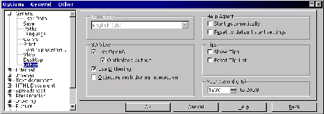

Next: Starwriter: Procesador de textos
Up: El ayudante
Previous: Barra
Índice General
El ayudante aparece en situaciones en que no se ha llamado. Aunque
esto puede resultar útil para los principiantes, puede ser incómodo
para otras personas. La configuración del ayudante se realiza de dos
formas:
- Cada vez que aparece, se puede marcar una casilla de verificación
para que no vuelva a aparecer en esa situación.
- Eligiendo en el menú [Herramientas] la opción Opciones,
en el cuadro de diálogo Opciones la categoría General y la
subcategoría Otros, y por fin atendiendo la sección Ayudante, como se
ve en la figura 5.27. Si se
marca la casilla Restablecer lista inicial, se borrarán todas las
configuraciones realizadas por el método anterior. Si se deja sin
marcar la casilla Inicio automático, el ayudante sólo aparecerá
cuando sea llamado explícitamente.
Figura 5.27:
Configuración del Ayudante
|

|
Proyecto Cursos - LuCAS - http://lucas.hispalinux.es/htmls/cursos.html